| 53 2023 |
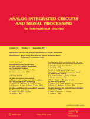 |
Chronos-V: a Many-core High-level Model with Support for Management Techniques
Weber, Iaçanã Ianiski ; Zotto, Angelo Elias Dal ; Moraes, Fernando Gehm. Analog Integrated Circuits and Signal Processing, vol. 116(1), pp 1-15, September 2023. |
|---|---|---|
| 52 | 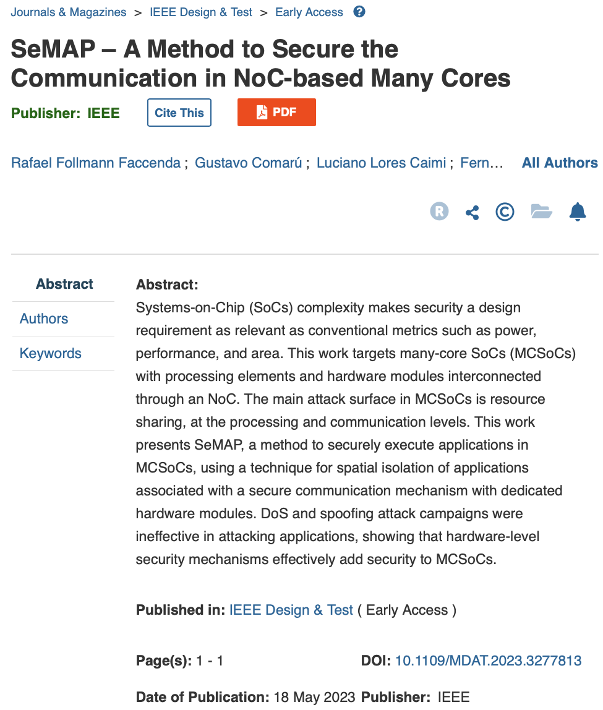 |
SeMAP - A Method to Secure the Communication in NoC-based Many Cores
Faccenda, Rafael Follmann ; Comarú, Gustavo ; Caimi, Luciano Lores ; Moraes, Fernando Gehm. IEEE Design & Test, vol. 40(5), pp 42-51, October 2023. |
| 51 |
From CNN to DNN Hardware Accelerators: A Survey on Design, Exploration, Simulation, and Frameworks
JURACY, Leonardo Rezende; GARIBOTTI, Rafael; MORAES, Fernando Gehm. Foundations and Trends® in Electronic Design Automation, vol. 13(4), pp 270-344, March 2023. |
|
| 50 2022 |
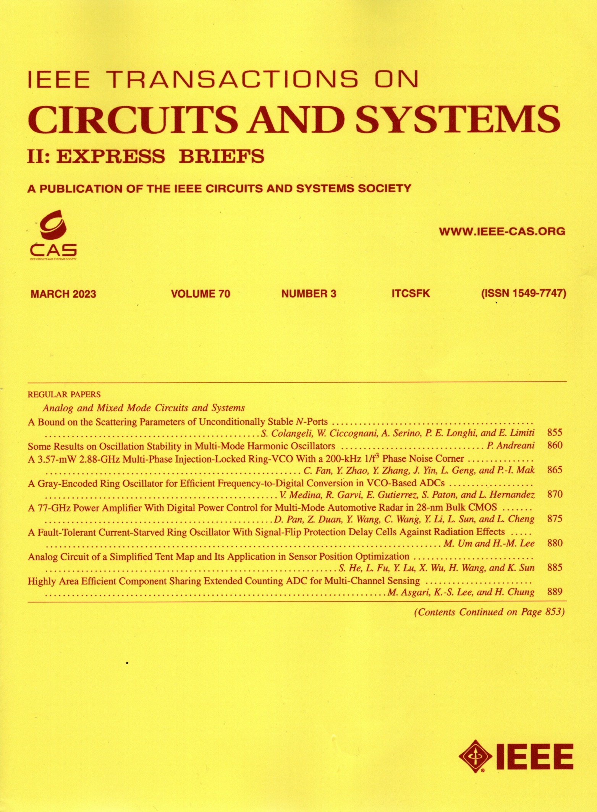 |
A Comprehensive Evaluation of Convolutional Hardware Accelerators
JURACY, Leonardo Rezende; AMORY, Alexandre; MORAES, Fernando Gehm.. IEEE Transactions on Circuits and Systems II - Express Briefs, vol. 70(3) , pp. 1149-1153, March 2023 (accepted: December 2022). |
| 49 | 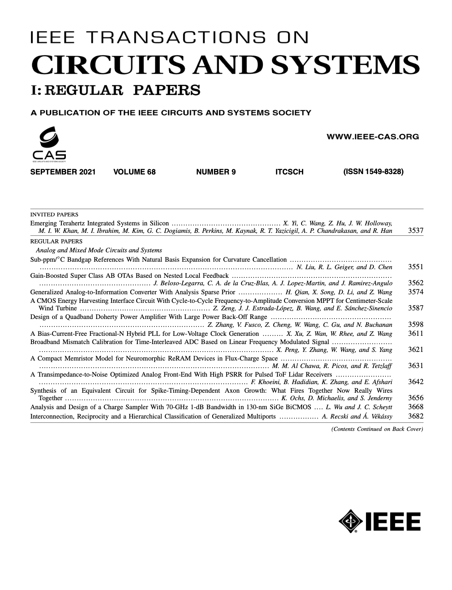 |
A Fast, Accurate, and Comprehensive PPA Estimation of Convolutional Hardware Accelerators
JURACY, Leonardo Rezende; AMORY, Alexandre; MORAES, Fernando Gehm. IEEE Transactions on Circuits and Systems I: Regular Papers, vol. 69(12) , pp. 5171-5184, December 2022. |
| 48 2021 |
Detection and Countermeasures of Security Attacks and Faults on NoC-based Many-Cores
FACCENDA, Rafael; CAIMI, Luciano; MORAES, Fernando Gehm. IEEE Access, vol. 9, pp. 153142-153152, November 2021. |
|
| 47 |
A Survey on Security Mechanisms for NoC-based Many-Core SoCs
CAIMI, Luciano; FACCENDA, Rafael; MORAES, Fernando Gehm. Journal of Integrated Circuits and Systems, vol. 16(2), pp. 1-15. November 2021. |
|
| 46 |
A High-Level Modeling Framework for Estimating Hardware Metrics of CNN Accelerators
JURACY, Leonardo Rezende; MOREIRA, Matheus Trevisan; AMORY, Alexandre; HAMPEL, Alexandre; MORAES, Fernando Gehm. IEEE Transactions on Circuits and Systems I: Regular Papers, vol. 68(11), pp. 4783-4795. November 2021. |
|
| 45 | 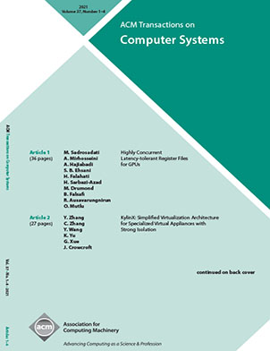 |
Modular and Distributed Management of Many-Core SoCs
RUARO, Marcelo; SANTANA, Anderson, JANTSCH, Axel; MORAES, Fernando Gehm. ACM Transactions on Computer Systems, vol. 38(1-2), Article No.: 1, pp 1–16. July 2021. |
| 44 | 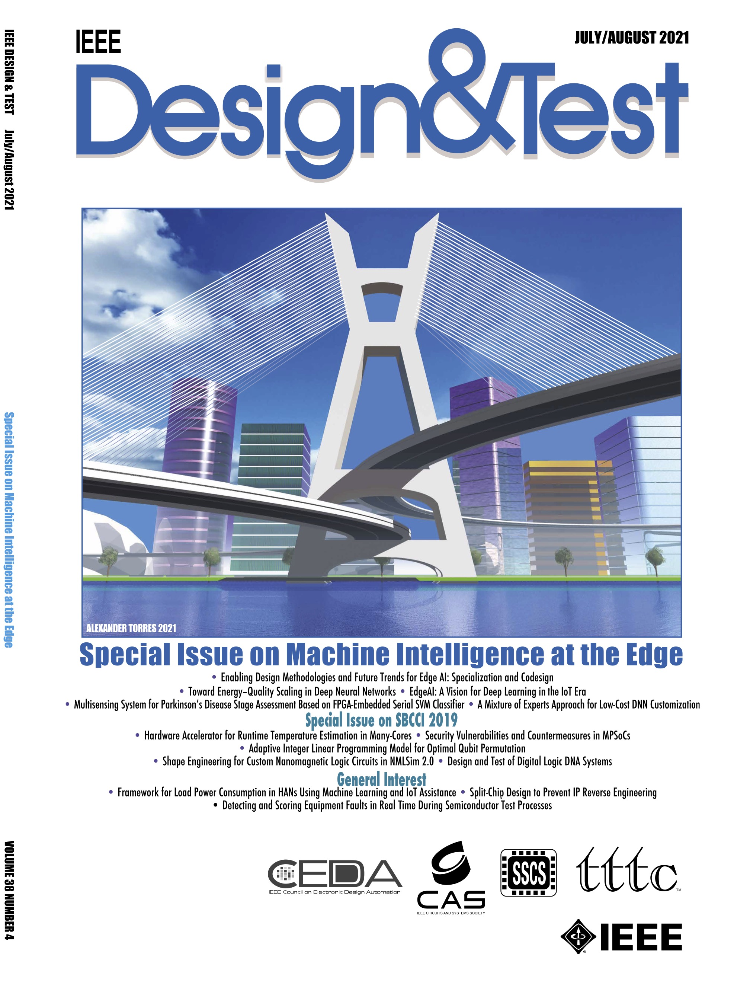 |
Hardware Accelerator for Runtime Temperature Estimation in Many-cores
DA SILVA, Alzemiro Lucas ; WEBER, Iacaça Ianiski ; MARTINS, Andre Luis Del Mestre; MORAES, Fernando Gehm. IEEE Design & Test, vol. 38(4), pp. 62-69. August 2021. |
| 43 |
Security Vulnerabilities and Countermeasures in MPSoCs
SANTANA, Anderson ; MEDINA, Henrique ; MORAES, Fernando Gehm. IEEE Design & Test, vol. 38(4), pp. 70-77. August 2021. |
|
| 42 | 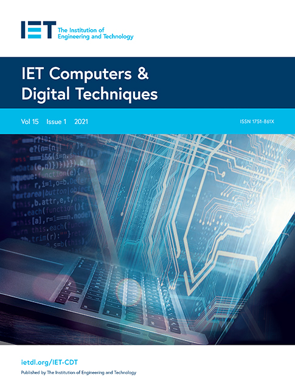 |
Evaluation of the Soft Error Assessment Consistency of a JIT-based Virtual Platform Simulator
ABICH, Geancarlo ; GARIBOTTI, Rafael ; BANDEIRA, Vitor ; ROSA, Felipe ; GAVA, Jonas ; BORTOLON, Felipe T. ; MEDEIROS, Guilherme ; MORAES, Fernando Gehm ; REIS, Ricardo Augusto da Luz ; OST, Luciano. IET Computers and Digital Techniques, vol. 1(2), pp 125-142. March 2021. |
| 41 |
A Differential IR-UWB Transmitter using PAM Modulation with Adaptive PSD
MOREIRA, Luiz Carlos; VITOR JUNIOR, Marcus; SAOTOME, Osamu; HECK, Guilherme; CALAZANS, Ney; MORAES, Fernando Gehm Analog Integrated Circuits and Signal Processing, vol. 106(1), pp. 339-350. January 2021. |
|
| 40 2020 |
SDN-Based Secure Application Admission and Execution for Many-Cores
RUARO, Marcelo; CAIMI, Luciano; MORAES, Fernando Gehm IEEE Access, vol. 8, pp. 177296-177306. September 2020. |
|
| 39 |
A Systemic and Secure SDN Framework for NoC-based Many-cores
RUARO, Marcelo; CAIMI, Luciano; MORAES, Fernando Gehm IEEE Access, vol. 8, pp. 105997 - 106008. June 2020. |
|
| 38 |
System management recovery in NoC-based many-core systems
FOCHI, Vinícius; CAIMI, Luciano; SILVA, Marcelo H.; MORAES, Fernando Gehm Analog Integrated Circuits and Signal Processing, vol. 106(1), pp. 85-98. January 2021. (Published online: 12 March 2020). |
|
|
A Survey of Aging Monitors and Reconfiguration Techniques
Leonardo Rezende Juracy, Matheus Trevisan Moreira, Alexandre de Morais Amory, Fernando Gehm Moraes arxiv.org, July 2020. link and PDF file |
||
| 37 2019 |
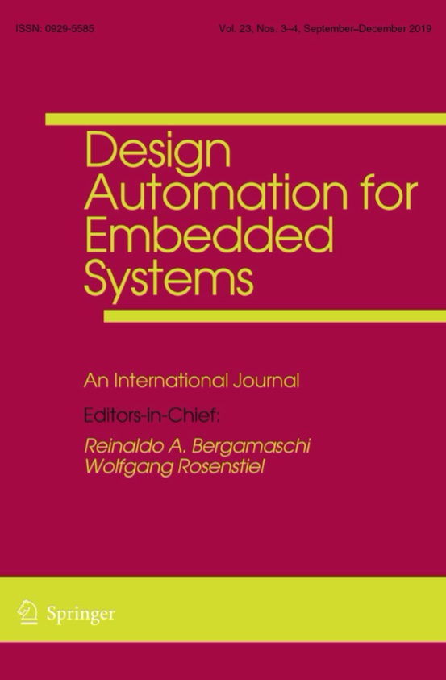 |
Memphis: a Framework for Heterogeneous Many-core SoCs Generation and Validation
RUARO, Marcelo; CAIMI, Luciano; FOCHI, Vinicius; MORAES, Fernando Gehm Design Automation for Embedded Systems, vol. 23(3-4), pp. 113-122. September-December 2019. |
| 36 | 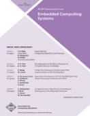 |
Self-Adaptive QoS Management at Communication and Computation Levels for Many-Core SoCs
RUARO, Marcelo; JANTSCH, Axel; MORAES, Fernando Gehm ACM Transactions on Embedded Computing Systems, vol. 18(4), Article No. 37, pp. 1-21. June 2019. |
| 35 |
The Power Impact of Hardware and Software Actuators on Self-Adaptable Many-core Systems
MARTINS, André Luís Del Mestre; GARIBOTTI, Rafael; DUTT, Nikil; MORAES, Fernando Gehm Journal of Systems Architecture, vol. 97, pp. 42-53. August 2019. |
|
| 34 |
Hierarchical adaptive Multi-objective resource management for many-core systems
MARTINS, André Luís Del Mestre; DA SILVA, Alzemiro Henrique Lucas; RAHMANI, Amir M.; DUTT, Nikil; MORAES, Fernando Gehm Journal of Systems Architecture, vol. 97, pp. 416-427. August 2019. |
|
| 33 2018 |
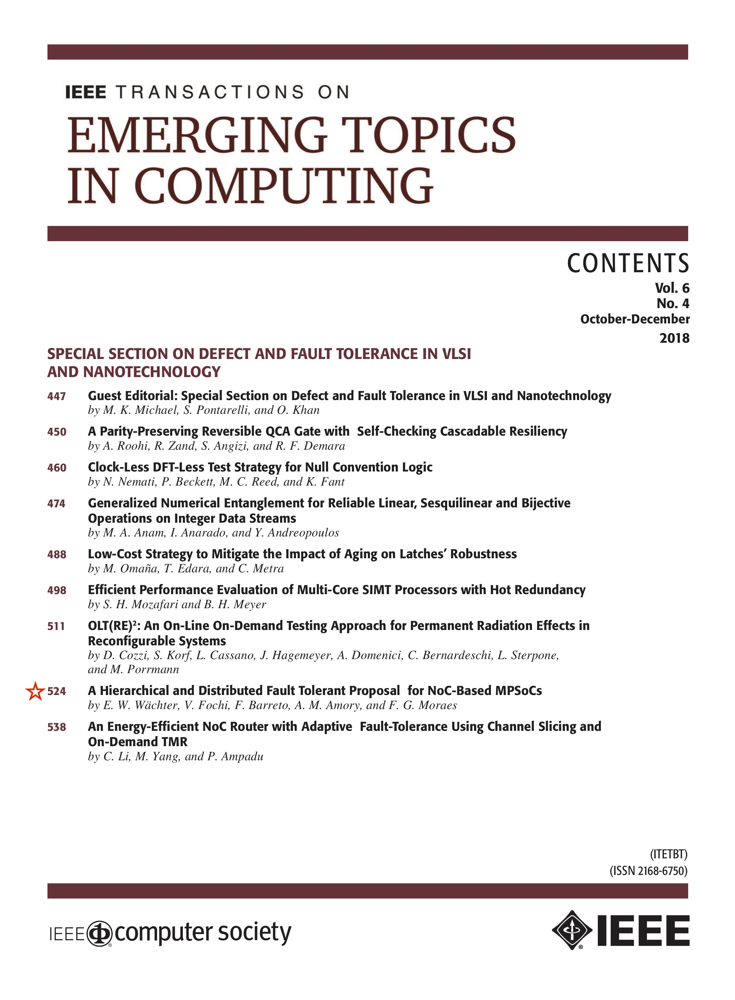 |
A Hierarchical and Distributed Fault Tolerant Proposal for NoC-based MPSoCs
WÄCHTER, Eduardo W.; FOCHI, Vinicius; BARRETO, Francisco; AMORY, Alexandre; MORAES, Fernando Gehm IEEE Transactions on Emerging Topics in Computing, vol. 6(4), pp 524-537. Oct.-Dec. 2018. |
| 32 2017 |
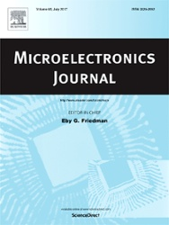 |
BrNoC: a Broadcast NoC for Control Messages in Many-core Systems
WACHTER, Eduardo; CAIMI, Luciano; FOCHI, Vinicius; MUNHOZ, Daniel; MORAES, Fernando Gehm Microelectronics Journal, vol. 68, pp. 69–77. October 2017. |
| 31 | 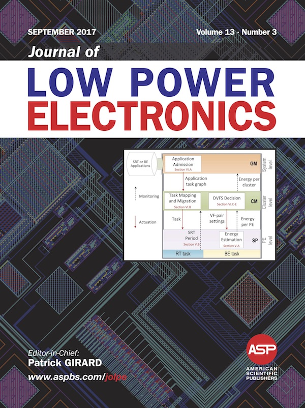 |
Distributed Runtime Energy Management for Many-Core Systems Running Real-Time Applications
MARTINS, André; RUARO, Marcelo; SANTANA, Anderson; MORAES, Fernando Gehm Journal of Low Power Electronics, vol. 13, pp. 402-418. 2017. |
| 30 | 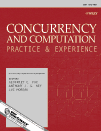 |
Exploiting performance, dynamic power and energy scaling in full-system simulators
DUENHA, Liana ; MADALOZZO, Guilherme ; MORAES, Fernando Gehm ; AZEVEDO, Rodolfo Concurrency and Computation: Practice And Experience, 2016, vol. 29(22), 16p. November 2017. |
| 29 2016 |
A New Local Clock Generator for Globally Asynchronous Locally Synchronous MPSoCs
HECK, Guilherme ; HECK, Leandro ; MOREIRA, Matheus Trevisan ; MORAES, Fernando Gehm ; CALAZANS, Ney Laert Vilar Analog Integrated Circuits and Signal Processing, vol. 89(3), pp 631–640, December 2016. |
|
| 28 |
MPSoCBench: A Benchmark for High-level Evaluation of Multiprocessor System-on-Chip Tools and Methodologies
DUENHA, Liana; MADALOZZO, Guilherme; SANTIAGO, Thiago; MORAES, Fernando Gehm ; AZEVEDO, Rodolfo Journal of Parallel and Distributed Computing, vol. 95, pp. 138–157, September 2016. |
|
| 27 |
Hierarchical Energy Monitoring for Task Mapping in Many-core Systems
CASTILHOS, Guilherme; MANDELLI, Marcelo; OST, Luciano; MORAES, Fernando Gehm Journal of Systems Architecture, ISSN 1383-7621, vol. 63, pp. 80–92, February 2016. |
|
| 26 2015 |
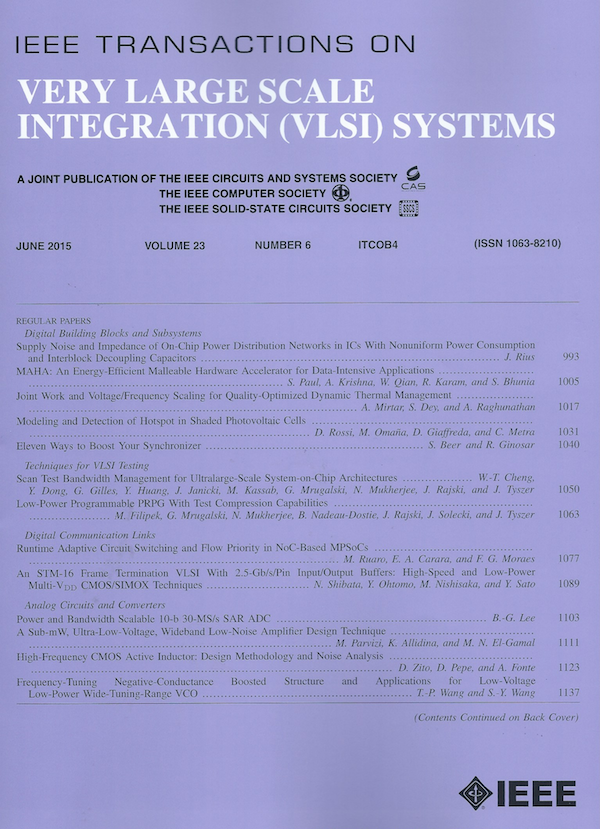 |
Runtime Adaptive Circuit-Switching and Flow Priority in NoC-Based MPSoCs
RUARO, R.; CARARA, Everton Alceu; MORAES, Fernando Gehm IEEE Transactions on Very Large Scale Integration (VLSI) Systems, ISSN 1063-8210, vol. 23(6), pp. 1077 - 1088, June 2015. |
| 25 | 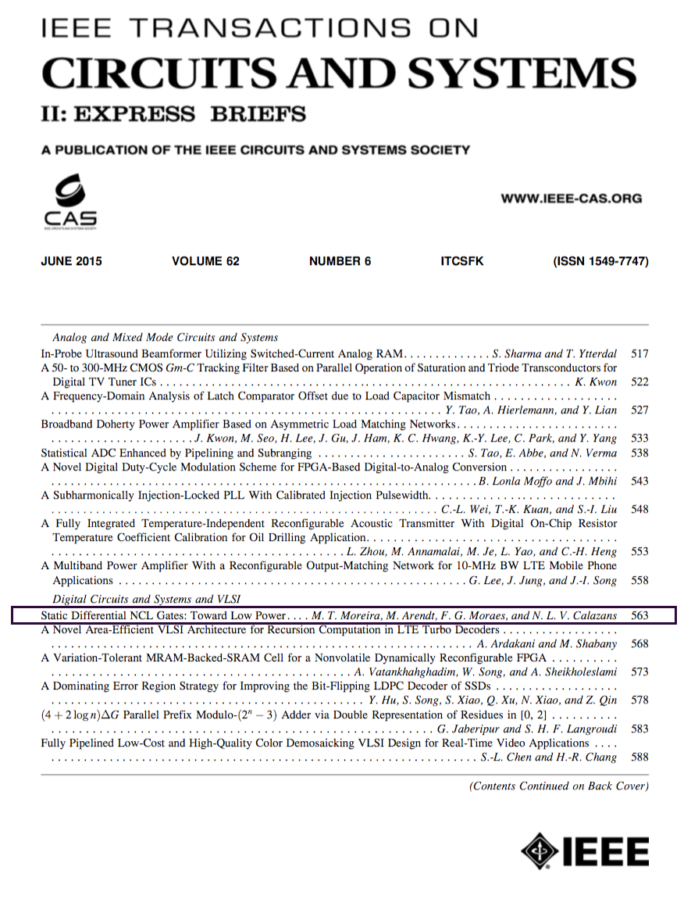 |
Static Differential NCL Gates: Towards Low Power
MOREIRA, Matheus, ARENDT, Michel, MORAES, Fernando Gehm, CALAZANS, Ney IEEE Transactions on Circuits and Systems II, Express Briefs, ISSN 1549-7747, vol. 62(6), pp. 563 - 567, June 2015. |
| 24 2014 |
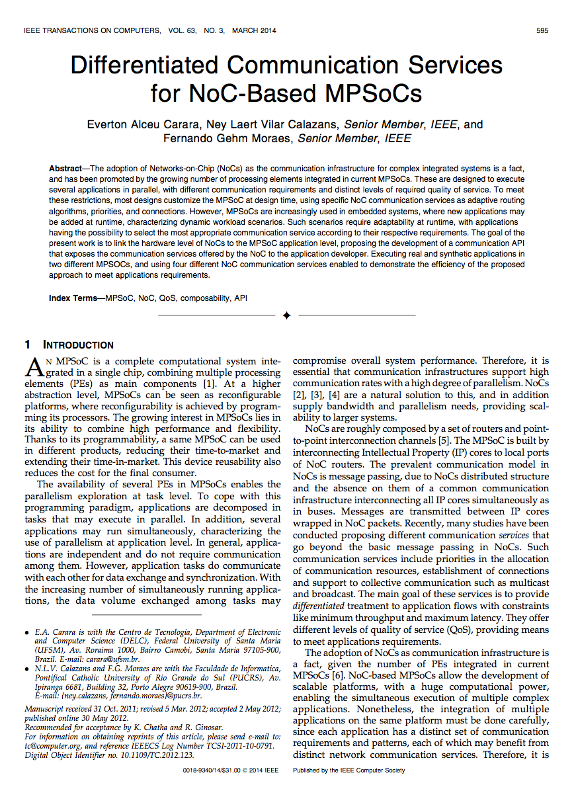 |
Differentiated Communication Services for NoC-Based MPSoCs
CARARA, Everton Alceu; CALAZANS, Ney; MORAES, Fernando Gehm IEEE Transactions on Computers (Print), ISSN 0018-9340, vol. 63(3), pp 595-608, March 2014. |
| 23 |
Spatially Distributed Dual-Spacer Null Convention Logic Design
MOREIRA, Matheus T.; TROJAN, Guilherme, MORAES, Fernando Gehm; CALAZANS, Ney Journal of Low Power Electronics, vol. 10(3), pp. 313-320, September 2014. |
|
| 22 |
MoNoC: A Monitored Network on Chip with Path Adaptation Mechanism
MORENO, Edson; WEBBER, Thais; MARCON, César; MORAES, Fernando Gehm; CALAZANS, Ney Journal of Systems Architecture, vol. 60(10), pp. 783–795, November 2014. |
|
| 21 | 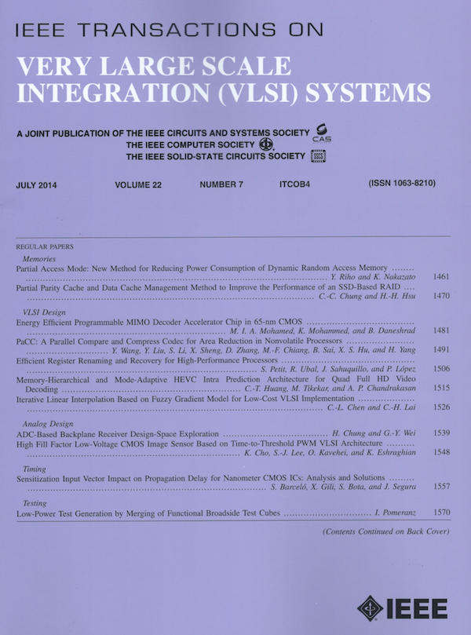 |
Beware the Dynamic C-Element
MOREIRA, Matheus T.; MORAES, Fernando Gehm; CALAZANS, Ney IEEE Transactions on Very Large Scale Integration (VLSI) Systems, vol. 22(7), pp 1644-1647, July 2014. |
| 20 2013 |
Power-Aware Dynamic Mapping Heuristics for NoC-Based MPSoCs Using a Unified Model-Based Approach
OST, Luciano; MANDELLI, Marcelo; ALMEIDA, Gabriel M.; MOLLER, Leandro H.; INDRUSIAK, Leandro S.; SASSATELLI, Gilles; BENOIT, Pascal; GLESNER, Manfred; ROBERT, Michel; MORAES, Fernando Gehm ACM Transactions on Embedded Computing Systems, ISSN 1539-9087, vol. 12(13) article 75, March 2013. |
|
| 19 2012 |
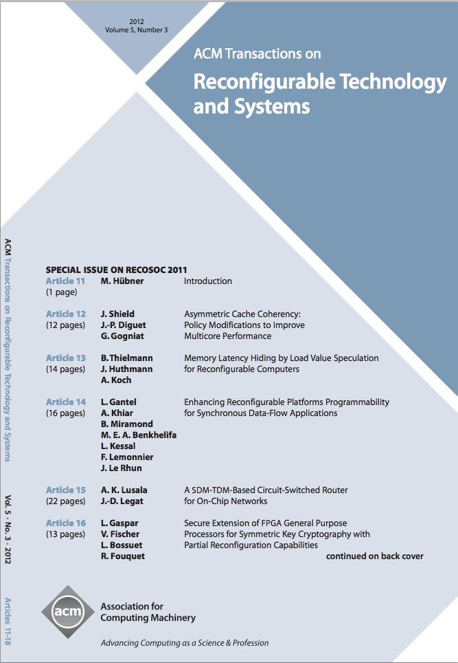 |
Enabling Adaptive Techniques in Heterogeneous MPSoCs Based on Virtualization
OST, Luciano; VARYANI, S.; INDRUSIAK, Leandro Soares; MANDELLI, Marcelo; ALMEIDA, Gabriel Marchesan; WACHTER, Eduardo; MORAES, Fernando Gehm; SASSATELLI, Gilles ACM Transactions on Reconfigurable Technology and Systems, ISSN 1936-7406, vol. 5, p. 17:1-17:11, 2012. |
| 18 |
Distributed Shared Memory for NoC-based MPSoCs
CHAVES, Tales Marchesan; MORAES, Fernando Gehm Journal of Integrated Circuits and Systems (JICS), ISSN 1807-1953, vol. 7, n. 1, pp. 47-60, 2012. paper |
|
| 17 2011 |
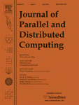 | CAFES: A Framework for Intrachip Application Modeling and Communication Architecture Design
MARCON, Cesar; CALAZANS, Ney; MORENO, Edson; MORAES, Fernando Gehm; HESSEL, Fabiano; SUSIN, Altamiro Journal of Parallel and Distributed Computing (Print), vol. 71, no. 5, p. 714-728, 2011. |
| 16 |
A New Test Scheduling Algorithm Based on Networks-on-Chip as Test Access Mechanisms
AMORY, Alexandre; LAZZARI, Cristiano; LUBASZEWSKI, Marcelo; MORAES, Fernando Gehm Journal of Parallel and Distributed Computing (Print), vol. 71, no. 5, p. 675-686, 2011. |
|
| 15 |
Exploring NoC-Based MPSoC Design Space with Power Estimation Models
OST, Luciano; GUINDANI, Guilherme; INDRUSIAK, Leandro; MAATTA, Sanna; MORAES, Fernando Gehm IEEE Design and Test of Computers, ISSN 0740-7475, vol. 28, no. 2, pp. 16-28, March/April,2011 |
|
| 14 | 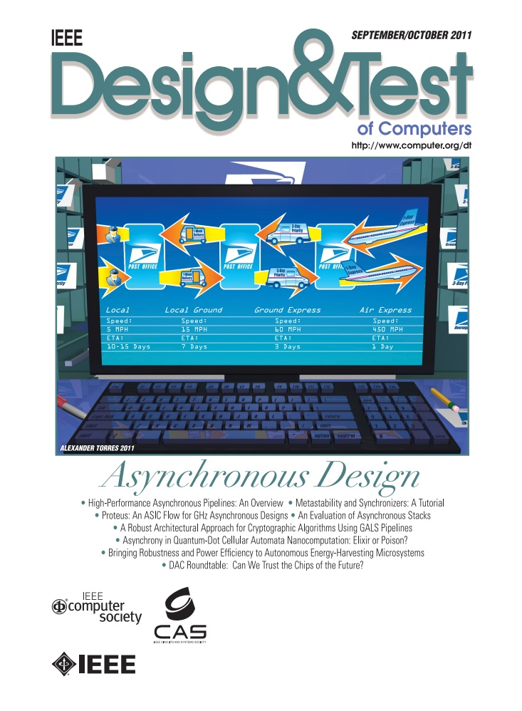 |
A Robust Architectural Approach for Cryptographic Algorithms using GALS Pipelines
SOARES, Rafael; CALAZANS, Ney; MORAES, Fernando Gehm; MAURINE, Philipe; TORRES, Lionel IEEE Design & Test of Computers, 2011, ISSN 0740-7475, vol. 28, no. 5, pp. 62-71. |
| 13 2010 |
Dynamic Task Mapping for MPSoCs
CARVALHO, Ewerson; CALAZANS, Ney; MORAES, Fernando Gehm IEEE Design and Test of Computers, ISSN 0740-7475, vol. 27, no. 5, pp. 26-35, Sep./Oct,2010 |
|
| 12 |
Joint Validation of Application Models and Multi-Abstraction Network-on-Chip Platforms
MAATTA, Sanna; MOLLER, Leandro; INDRUSIAK, Leandro; OST, Luciano; GLESNER, Manfred; NURMI, Jari; MORAES, Fernando Gehm International Journal of Embedded and Real-Time Communication Systems (IJERTCS), ISSN 1947-3176, vol. 1, p. 86-101, 2010. paper |
|
| 11 2009 |
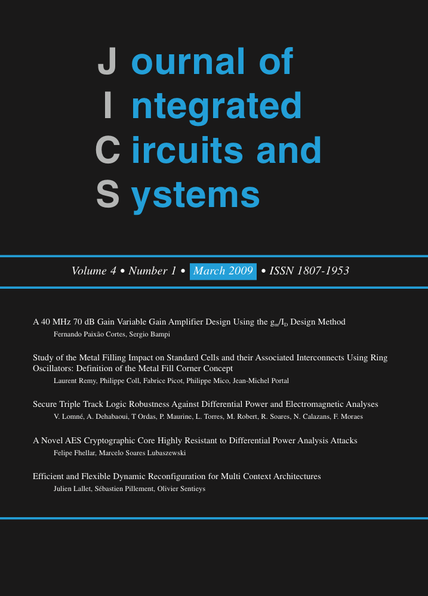 |
Secure Triple Track Logic Robustness Against Differential Power and Electromagnetic Analyses
LOMME, V.; DEHBAOUI, A.; MAURINE, P.; TORRES, Lionel; ROBERT, Michel; SOARES, Rafael; CALAZANS, Ney; MORAES, Fernando Gehm Journal of Integrated Circuits and Systems (JICS), ISSN 1807-1953, vol. 4, n. 1, pp. 20-28, 2009. paper |
| 10 2008 |
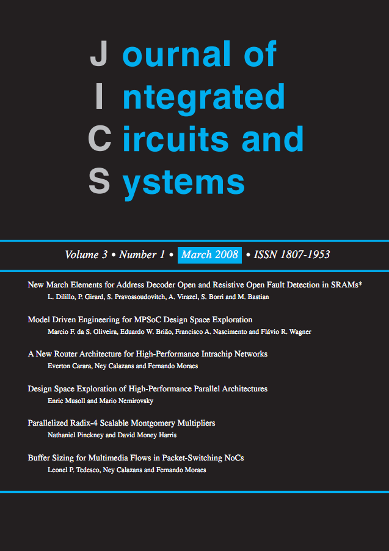 |
Buffer Sizing for Multimedia Flows in Packet-Switching NoCs
TEDESCO, Leonel; CALAZANS, Ney; MORAES, Fernando Gehm Journal of Integrated Circuits snd Systems (JICS), ISSN 1807-1953, vol. 3, n. 1, pp. 46-56, 2008. paper |
| 9 |
A New Router Architecture for High-Performance Intrachip Networks
CARARA, Everton; CALAZANS, Ney; MORAES, Fernando Gehm Journal of Integrated Circuits And Systems (JICS), ISSN 1807-1953, vol. 3, n. 1, pp. 23-31, 2008. paper |
|
| 8 |
Comparison of network-on-chip mapping algorithms targeting low energy consumption
MARCON, Cesar; MORENO, Edson; CALAZANS, Ney; MORAES, Fernando Gehm Computers & Digital Techniques, IET, ISSN 1751-861X, vol. 2, no. 6, p. 471-482, 2008. |
|
| 7 2007 |
Wrapper design for the reuse of a bus, network-on-chip, or other functional interconnect as test access mechanism
AMORY, Alexandre; GOOSSENS, Kess; MARINISSEN, Erik; LUBASZEWSKI, Marcelo; MORAES, Fernando Gehm Computers & Digital Techniques, IET, ISSN 1751-861X, vol. 1, n. 3, p. 197-206, May, 2007. |
|
| 6 2005 |
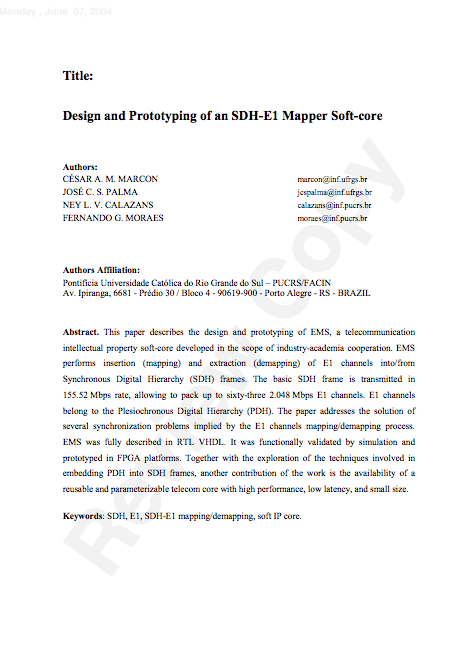 |
Design and Prototyping of an SDH-E1 Mapper Soft-core
MARCON, Cesar; PALMA, Jose; CALAZANS, Ney; MORAES, Fernando Gehm Revista da Sociedade Brasileira de Telecomunicações, Campinas, 2005. paper |
| *5* 2004 |
HERMES: an Infrastructure for Low Area Overhead Packet-switching Networks on Chip
MORAES, Fernando Gehm; CALAZANS, Ney; MELLO, Aline; MOLLER, Leandro; OST, Luciano Integration, ISSN 0167-9260, vol. 38, n. 1, p. 69-93, October, 2004. |
|
| 4 |
Core Communication Interface for FPGAs
PALMA, José; MELLO, Aline; MOLLER, Leandro; MORAES, Fernando Gehm; CALAZANS, Ney Journal of Integrated Circuits and Systems (JICS), ISSN 1807-1953, vol. 1, n. 1, p. 44-51, March 2004. paper |
|
| 3 2003 |
Design and Prototyping of an E1 Drop_Insert Soft Core
MORAES, Fernando Gehm; CALAZANS, Ney; MARCON, Cesar; MESQUITA, Daniel; PALMA, José; BLAUTH, Vitor IEE Proceedings on Communications, Londres, vol. 150, n. 4, p. 239-243, 2003. |
|
| 2 2001 |
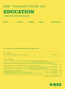 |
Integrating the Teaching of Computer Organization and Architecture with Digital Hardware Design Early in Undergraduate Courses
CALAZANS, Ney; MORAES, Fernando Gehm IEEE Transactions on Education, Piscataway, ISSN 0018-9359, vol. 44, n. 2, p. 109-119, 2001. |
| 1 | 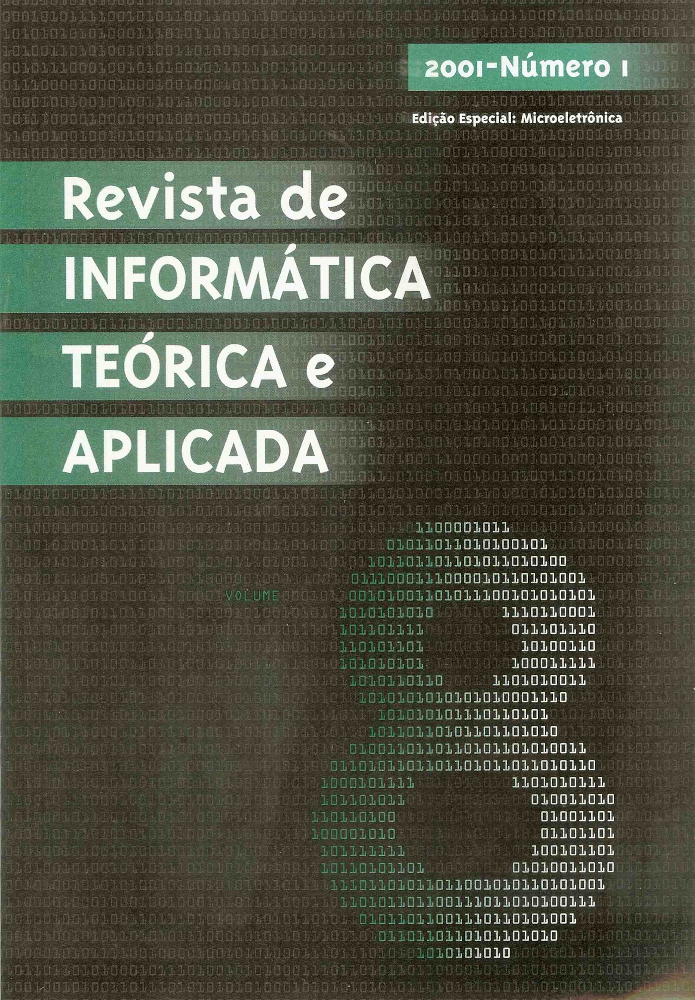 | Projeto para Prototipação de um IP Soft Core MAC Ethernet
CALAZANS, Ney; MORAES, Fernando Gehm; TOROK, Delfim; ANDREOLI, Andrey RITA, Revista de Informatica Teórica e Aplicada, ISSN 0103-4308, vol. 8, n. 1, p. 23-41, 2001 paper |